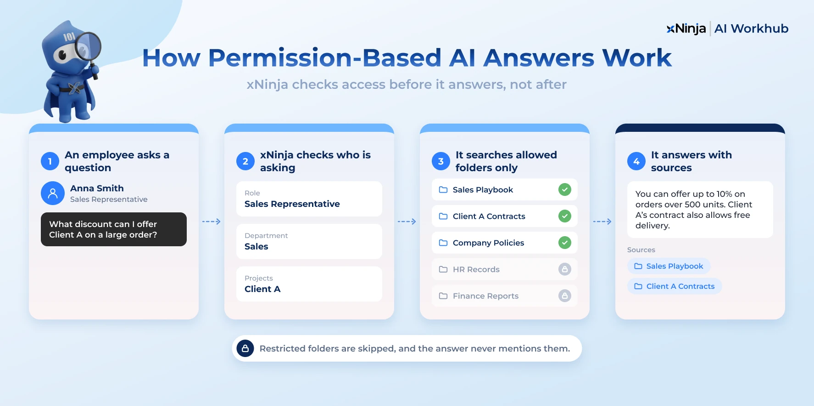
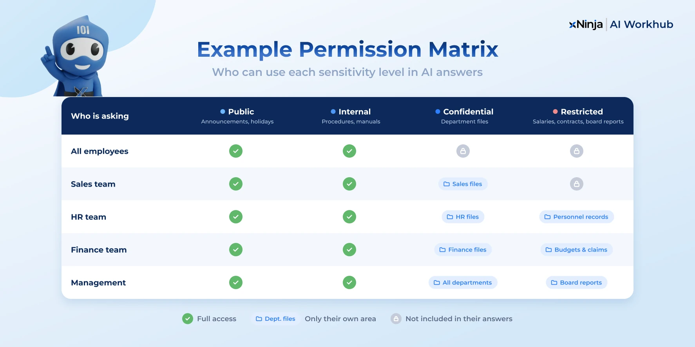

AI ช่วยให้ค้นหาความรู้ในองค์กรได้ง่ายขึ้น แต่ก็อาจทำให้ข้อมูลที่พนักงานบางคนไม่ควรเห็นถูกเปิดเผยออกมาได้ หากผู้ช่วย AI ค้นหานโยบาย HR สัญญา และรายงานการเงินได้ทั้งหมด คำถามง่าย ๆ เพียงข้อเดียวก็อาจทำให้ข้อมูลสำคัญไปถึงคนที่ไม่ควรรู้ ยิ่งเชื่อมต่อความรู้เข้ากับ AI มากเท่าไร การควบคุมสิทธิ์การเข้าถึงก็ยิ่งสำคัญมากขึ้นเท่านั้น
ทางออกคือทำให้ AI ใช้สิทธิ์เดียวกับระบบจัดการความรู้ของคุณ ก่อนสร้างคำตอบ AI ควรตรวจสอบว่าผู้ใช้มีสิทธิ์เข้าถึงข้อมูลใดบ้าง และใช้เฉพาะข้อมูลนั้น บทความนี้อธิบายวิธีการทำงานของ AI ที่ตอบตามสิทธิ์ กฎการเข้าถึงที่ควรตั้งค่า และวิธีดูแลให้สิทธิ์ถูกต้องเมื่อทีมและเอกสารเปลี่ยนแปลง
คำตอบโดยสรุป
คำตอบของ AI ควรใช้สิทธิ์เดียวกับเอกสารของคุณ:
- ค้นหาเฉพาะข้อมูลที่ได้รับอนุญาต AI ใช้เฉพาะสิ่งที่ผู้ถามเปิดดูได้
- ตรวจสอบสิทธิ์ก่อน ใช้สิทธิ์ก่อนที่จะเขียนคำตอบ
- แสดงแหล่งที่มา ทุกคำตอบระบุเอกสารที่ใช้อ้างอิง
- ไม่เปิดเผยไฟล์ที่ถูกจำกัด AI จะไม่บอกว่าไฟล์เหล่านั้นมีอยู่
ทำไม AI ต้องใช้สิทธิ์เดียวกับเอกสารของคุณ
บริษัทส่วนใหญ่ควบคุมอยู่แล้วว่าใครเปิดโฟลเดอร์ใดได้บ้าง ไฟล์ HR ข้อมูลเงินเดือน สัญญา และรายงานของคณะกรรมการ มักจำกัดให้เห็นได้เพียงไม่กี่คน ผู้ช่วย AI เปลี่ยนวิธีเข้าถึงข้อมูลเหล่านี้ แทนที่จะเปิดไฟล์ พนักงานเพียงถามคำถาม แล้ว AI จะดึงคำตอบจากทุกสิ่งที่ค้นหาได้
หาก AI ค้นหาได้ทุกอย่าง ก็จะกลายเป็นทางลัดที่ข้ามกฎการเข้าถึงที่มีอยู่ คำถามอย่าง “ผู้จัดการฝ่ายขายคนล่าสุดที่เราจ้างได้เงินเดือนเท่าไร” อาจได้คำตอบเป็นข้อมูลเงินเดือนจากไฟล์ HR ที่พนักงานคนนั้นไม่มีสิทธิ์เปิด แม้แต่บทสรุปสั้น ๆ ก็อาจเปิดเผยมากเกินไป เพราะรายละเอียดที่อ่อนไหวอยู่ในคำตอบ ไม่ใช่ในไฟล์
AI ที่ตอบตามสิทธิ์ทำงานอย่างไร
ผู้ช่วย AI ที่คำนึงถึงสิทธิ์จะตรวจสอบสิทธิ์ก่อนตอบ ไม่ใช่หลังตอบ โดยทั่วไปมีขั้นตอนดังนี้
- ถาม พนักงานเข้าสู่ระบบและถามคำถาม
- ระบุตัวตน ระบบตรวจสอบตำแหน่ง แผนก และโปรเจกต์ของผู้ถาม
- ค้นหา AI ค้นหาเฉพาะในเอกสารและโฟลเดอร์ที่ผู้ถามเปิดได้
- ตอบ เขียนคำตอบจากแหล่งข้อมูลเหล่านั้น พร้อมแสดงเอกสารที่ใช้
- ไม่เปิดเผย หากคำตอบอยู่ในข้อมูลที่ถูกจำกัดเท่านั้น AI จะแจ้งว่าไม่พบข้อมูล โดยไม่บอกว่ามีเอกสารที่ถูกจำกัดอยู่

ควรตั้งกฎการเข้าถึงอะไรบ้าง
เริ่มจากโครงสร้างที่คุณมีอยู่แล้ว แล้วเพิ่มรายละเอียดเฉพาะจุดที่จำเป็น องค์กรส่วนใหญ่ใช้กฎสี่แบบร่วมกัน:
- ตำแหน่ง: ผู้จัดการ พนักงาน และผู้ดูแลระบบเห็นรายละเอียดในระดับที่ต่างกัน
- แผนก: HR การเงิน ฝ่ายขาย และฝ่ายผลิต ดูแลโฟลเดอร์ของตนเอง
- โปรเจกต์หรือสาขา: ทีมที่ดูแลลูกค้า ผลิตภัณฑ์ หรือโรงงานใดโรงงานหนึ่ง เข้าถึงเอกสารที่เกี่ยวข้องได้
- ระดับความลับ: กำหนดเอกสารเป็นสาธารณะ ภายใน ลับ หรือลับเฉพาะ และกำหนดว่าใครใช้แต่ละระดับได้

ใช้กฎให้น้อยที่สุด การกำหนดสิทธิ์ระดับโฟลเดอร์จัดการได้ง่ายกว่าการกำหนดทีละไฟล์ และช่วยให้รู้ชัดว่าเอกสารใหม่ควรจัดเก็บไว้ที่ใด
ตัวอย่าง: คำถามเดียวกัน คำตอบต่างกัน
สมมติว่าพนักงานสองคนถามผู้ช่วย AI ด้วยคำถามเดียวกันว่า “นโยบายค่าล่วงเวลาสำหรับวิศวกรอาวุโสเป็นอย่างไร”
ผู้จัดการ HR เข้าถึงได้ทั้งคู่มือพนักงานและแนวทางค่าตอบแทน คำตอบจึงมีทั้งนโยบายทั่วไปและอัตราค่าจ้างของแต่ละระดับ ส่วนหัวหน้างานฝ่ายผลิตเข้าถึงได้เฉพาะคู่มือพนักงาน คำตอบจึงอธิบายนโยบายทั่วไป และแนะนำให้ติดต่อ HR เพื่อสอบถามอัตราค่าจ้าง

ทั้งสองคำตอบถูกต้อง ไม่มีใครเห็นข้อมูลที่ตนเปิดดูไม่ได้ และไม่ต้องดูแลระบบ AI แยกสำหรับ HR
วิธีดูแลให้สิทธิ์ถูกต้องอยู่เสมอ
กฎการเข้าถึงจะได้ผลก็ต่อเมื่อเป็นปัจจุบันอยู่เสมอ พนักงานเปลี่ยนตำแหน่ง โปรเจกต์จบลง และมีเอกสารใหม่เพิ่มเข้ามาทุกวัน
- ซิงค์กับรายชื่อพนักงาน: การเปลี่ยนตำแหน่งและแผนกจะมีผลโดยอัตโนมัติ
- ยกเลิกสิทธิ์ในวันสุดท้ายของการทำงาน: รวมถึงสิทธิ์ใช้ผู้ช่วย AI
- ใช้การสืบทอดสิทธิ์จากโฟลเดอร์: เอกสารใหม่ได้รับสิทธิ์ตามโฟลเดอร์ ไม่ต้องตั้งทีละไฟล์
- ตรวจสอบทุกไตรมาส: ทบทวนโฟลเดอร์ที่อ่อนไหวร่วมกับเจ้าของแต่ละแผนก
- เก็บบันทึก: บันทึกคำถามและแหล่งข้อมูลที่ใช้ เพื่อตรวจสอบได้ว่า AI แชร์อะไรไปบ้างหากมีข้อกังวล
ข้อผิดพลาดที่พบบ่อย
เชื่อมต่อ AI ด้วยบัญชีผู้ดูแลระบบ AI จะเห็นทุกอย่าง และผู้ใช้ทุกคนก็เท่ากับได้สิทธิ์นั้นไปด้วย
พึ่งพาเพียงคำสั่ง การบอก AI ว่า “ห้ามเปิดเผยข้อมูลเงินเดือน” ไม่ใช่การควบคุมสิทธิ์ หากข้อมูลยังค้นหาได้ ก็ยังอาจปรากฏในคำตอบ
คัดลอกไฟล์ไปไว้ในโฟลเดอร์กลางให้ AI ใช้ วิธีนี้ทำให้สิทธิ์เดิมหายไป และเหลือไฟล์ซ้ำที่ล้าสมัย
ลืมเวอร์ชันเก่าและไฟล์แนบ ฉบับร่างก่อนหน้าและไฟล์แนบในอีเมลมักมีข้อมูลอ่อนไหวเหมือนกับฉบับจริง
xNinja ช่วยควบคุมคำตอบของ AI ได้อย่างไร
xNinja.Knowledge Management ช่วยสร้าง รวบรวม และจัดการองค์ความรู้ขององค์กร พร้อมระบบควบคุมสิทธิ์การเข้าถึงในตัว:
- กำหนดสิทธิ์ตามประเภทขององค์ความรู้: ตั้งระดับการเข้าถึงให้แต่ละประเภท เพื่อปกป้ององค์ความรู้สำคัญขององค์กร
- ตอบจากแหล่งข้อมูลที่ได้รับอนุญาต: AI สร้างคำตอบจากแหล่งความรู้ที่แต่ละคนมีสิทธิ์เข้าถึง
- ค้นหา สรุป และแนะนำด้วย AI: พนักงานหาข้อมูลที่ต้องการได้เร็วขึ้น
- รวมความรู้ภายในไว้ที่เดียว: จัดเก็บ SOP คู่มือ แนวทาง และคำถามที่พบบ่อยไว้ด้วยกัน
ดูข้อมูลเพิ่มเติมเกี่ยวกับ xNinja.Knowledge Management
เริ่มจากโฟลเดอร์ที่อ่อนไหวที่สุด
ไม่จำเป็นต้องติดป้ายเอกสารทุกฉบับตั้งแต่วันแรก เริ่มจากโฟลเดอร์ที่เก็บข้อมูลเงินเดือน สัญญา และประวัติพนักงาน ยืนยันว่าใครควรเห็นข้อมูลเหล่านั้น แล้วจึงเชื่อมต่อ AI เมื่อกฎเหล่านี้พร้อมแล้ว
นัดหมายสาธิต เพื่อดูว่า xNinja ตอบคำถามตามสิทธิ์ของพนักงานแต่ละคนอย่างไร